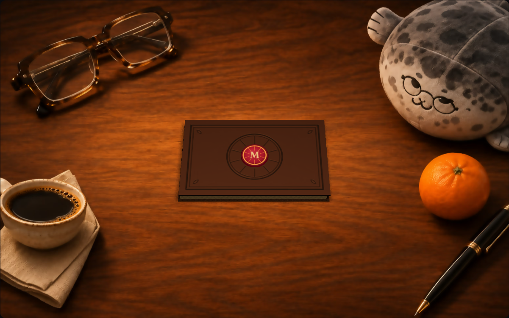
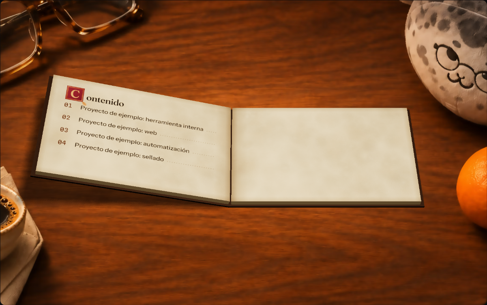
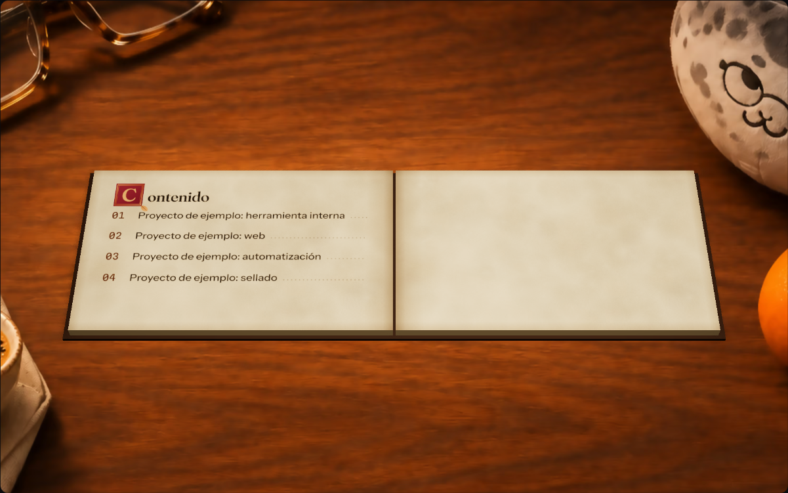
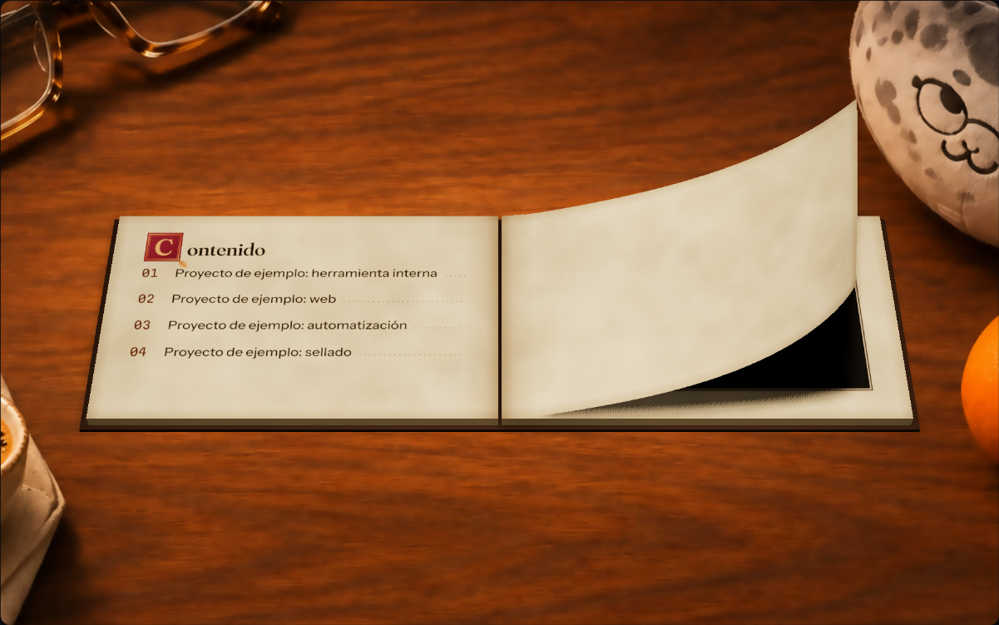
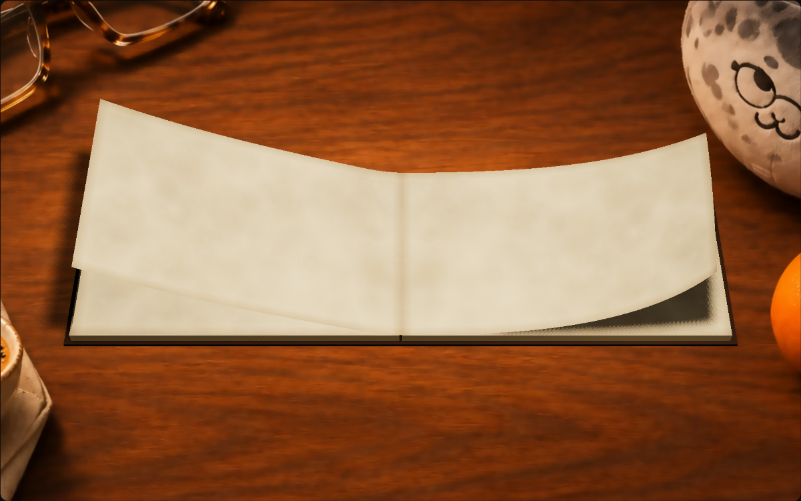
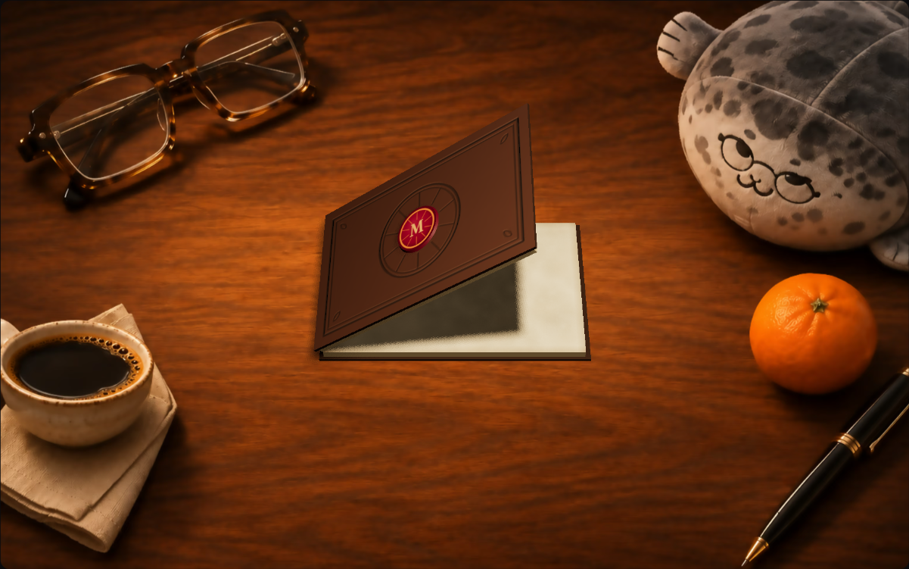
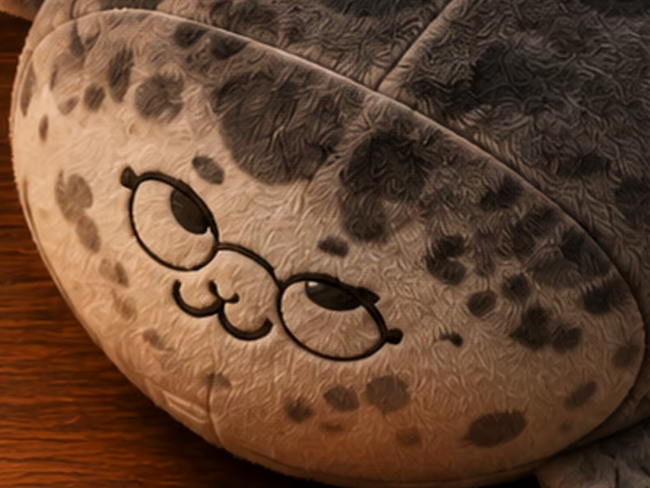
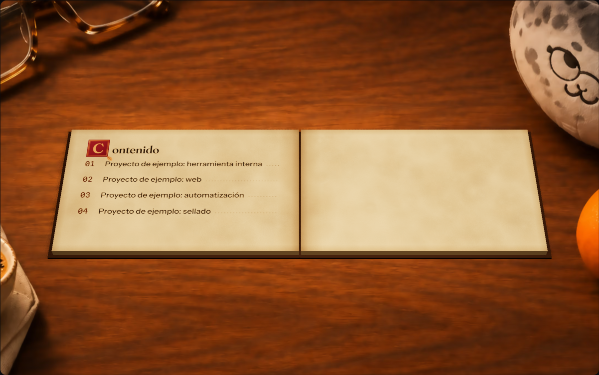

El escritorio
Tu foto del escritorio, ahora bajo el libro del catálogo: encuadre 1.10, una pasada que limpia el grano y conserva los bordes. El libro descansa siempre sobre madera, sin tocar las gafas, la taza, la foca ni la mandarina. Pesa 109.7 KB (límite 122.9 KB); la primera pintura, 17.7 KB. Volver.
El libro sobre el escritorio, 1440 × 900












El grano, al 100 %



Descartado: una lámpara más cálida

